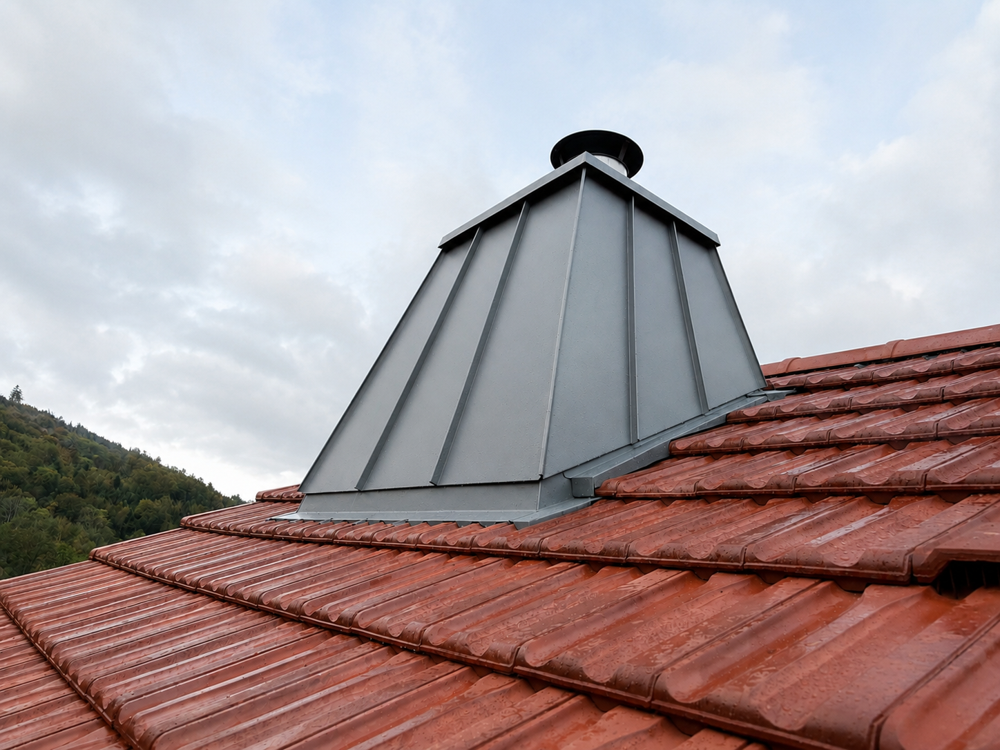
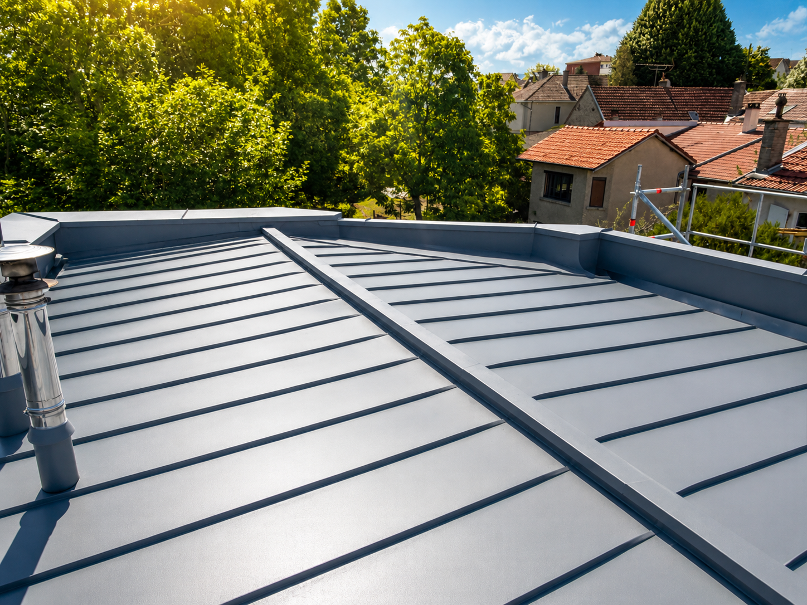
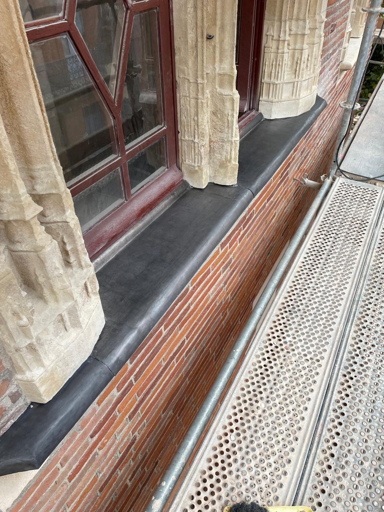

Couverture zinc
Comprendre les formes de couverture en zinc, les raccords et les questions à poser avant une rénovation.
Couverture zinc à Vincennes →Artisan couvreur-zingueur · Vincennes & Est parisien
Couverture, zinguerie et rénovation de toiture : chaque détail compte pour protéger un bâtiment et respecter son caractère.
Une entreprise artisanale basée à Champs-sur-Marne, avec Vincennes comme premier secteur de développement.
Les Toits de Champagne — une même exigence pour la couverture et ses finitions.
Vincennes · Val-de-Marne · Est parisien
Notre métier
La couverture protège le bâtiment ; la zinguerie guide l’eau autour des cheminées, des lucarnes, des noues et des rives. Nous abordons ces ouvrages comme un ensemble, depuis l’observation du toit jusqu’au choix des reprises à effectuer.
À Vincennes, la diversité des toitures demande de regarder chaque bâtiment pour ce qu’il est : une couverture en zinc, un pan en tuile, une lucarne à reprendre ou un raccord qui a perdu son étanchéité.

Nos savoir-faire
Choisissez le sujet qui correspond à votre besoin. Chaque page détaille les travaux concernés et renvoie vers la vue d’ensemble de notre intervention à Vincennes.
Comprendre les formes de couverture en zinc, les raccords et les questions à poser avant une rénovation.
Couverture zinc à Vincennes →Les ouvrages qui collectent et conduisent l’eau, ainsi que les raccords qui protègent les jonctions.
Travaux de zinguerie →Pose ou remplacement d’une fenêtre de toit : intégration à la couverture et raccord d’étanchéité.
Pose de Velux à Vincennes →Matière & geste
Quelques vues de chantiers et d’ouvrages en zinc issus des éléments de l’entreprise. Les images montrent les matériaux et les détails, sans attribuer de lieu ou de date qui ne seraient pas documentés.


Un projet à Vincennes ?
Expliquez-nous le problème ou le projet ; nous conviendrons de la suite à donner.
Questions fréquentes
Couverture zinc, travaux de zinguerie, gouttières, rénovation et recherche de fuite. Chaque demande est étudiée selon la configuration du bâtiment.
L’entreprise est basée à Champs-sur-Marne et développe son secteur d’intervention vers Vincennes.
Remplissez le formulaire en indiquant les travaux à chiffrer, la commune du chantier et vos disponibilités. Vous pouvez aussi appeler le 06 33 31 88 81.
Votre projet de toiture
Décrivez les travaux à chiffrer, la commune du chantier et vos disponibilités. Nous reviendrons vers vous pour préciser votre demande.
Appel direct à l’entreprise
lestoitsdechampagne@gmail.com